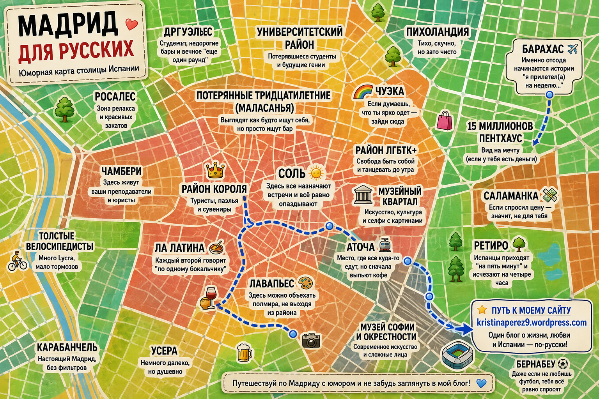

N ↑
Стилизованная схема, не точная геодезия
субъективно · с любовью · наведи курсор на район

Эта интерактивная народная карта Мадрида — субъективная, мемная карта районов испанской столицы, составленная на основе неформальных наблюдений местных жителей и переехавших русскоязычных. Она поможет сориентироваться, куда переехать в Мадриде, показывает рейтинг районов в шутливой форме и содержит карту Мадрида с описанием районов — от исторического центра до отдалённых, но душевных окраин.
На карте отмечены районы Мадрида с описанием: студенческие зоны, исторический центр, спокойные семейные кварталы и бюджетные окраины. Отзывы о районах Мадрида даны в юмористической форме и отражают народное, субъективное мнение, а не официальную статистику или рейтинг недвижимости.
Для тех, кто впервые в городе или выбирает жильё, на карте есть отдельный слой со станциями метро (Metro de Madrid), расставленными по краям районов — это удобно, чтобы сразу понять, откуда ближе добираться до нужной части города.
Субъективная интерактивная карта районов Мадрида с юмористическими описаниями от лица местных жителей, в духе мемных карт городов.
Зависит от бюджета и приоритетов: Чамбери и Ретиро — спокойствие и семьи, Маласанья и Ла Латина — движение и бары, Аргуэльес — студенты. Наведите курсор на область карты, чтобы увидеть описание.
Нажмите кнопку «Метро» над картой — появится слой со станциями метро по районам.
Нет, карта — юмористическая и субъективная интерпретация, не объективная геодезическая или статистическая оценка районов.